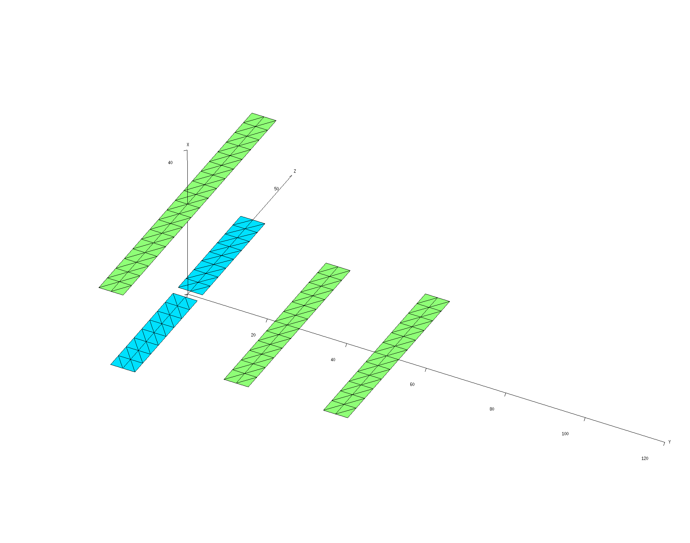
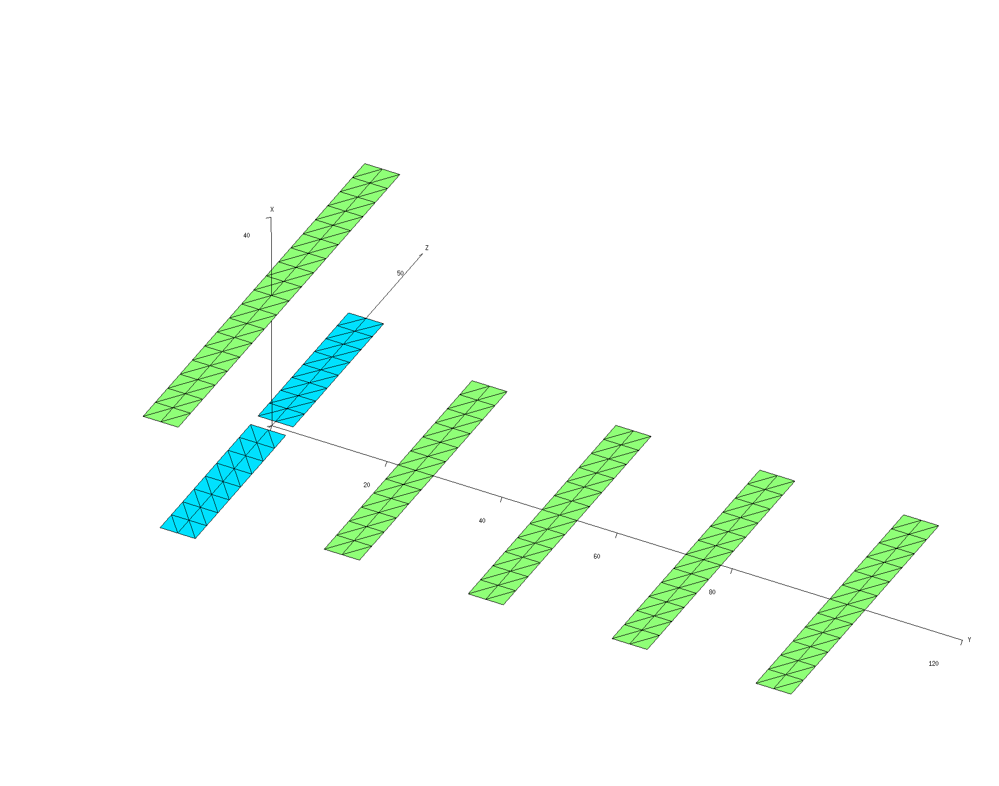
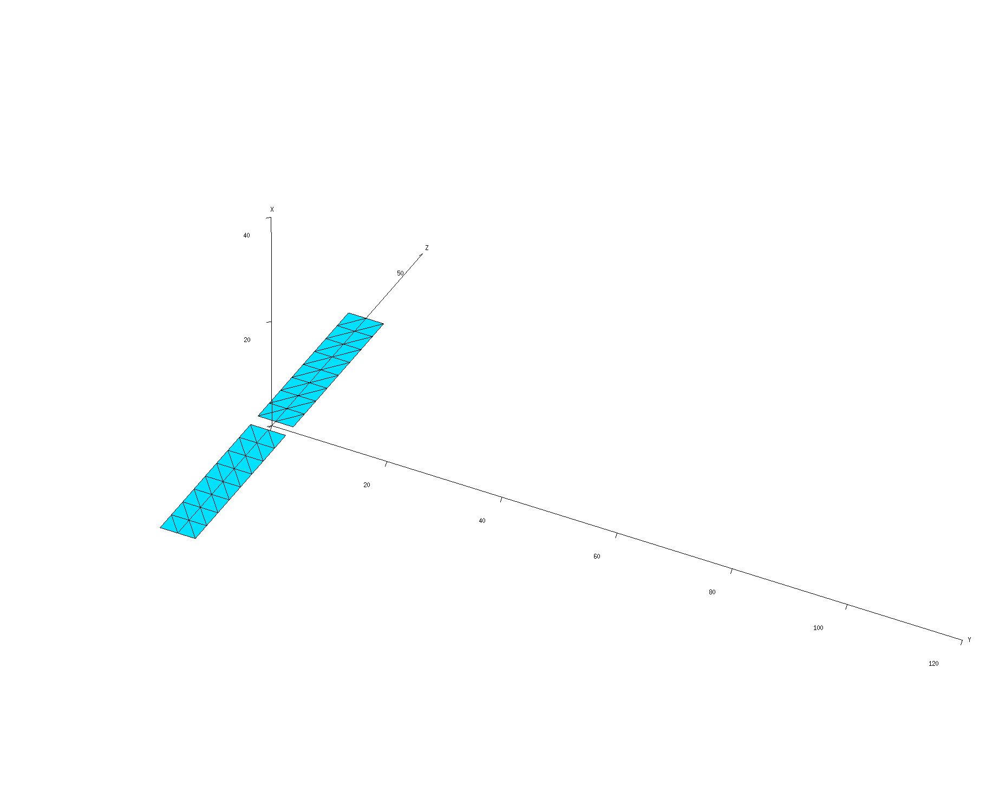
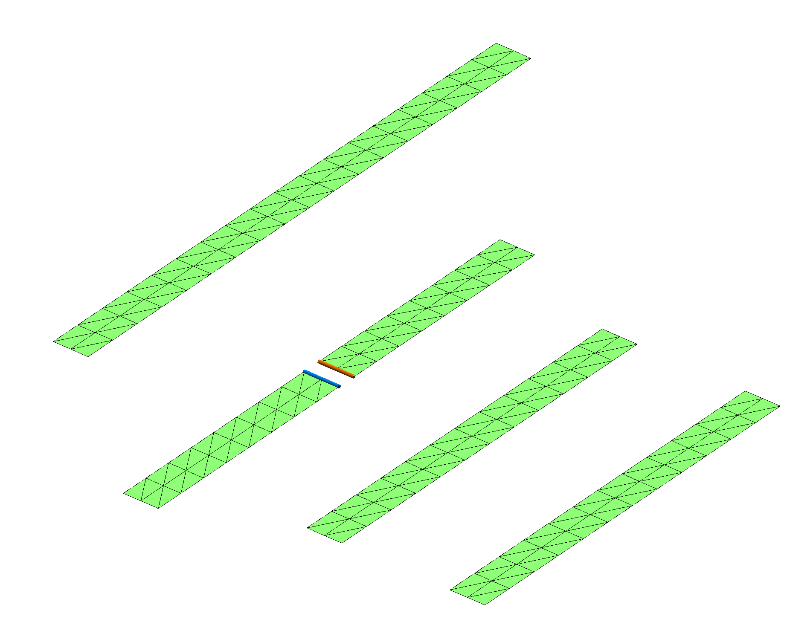
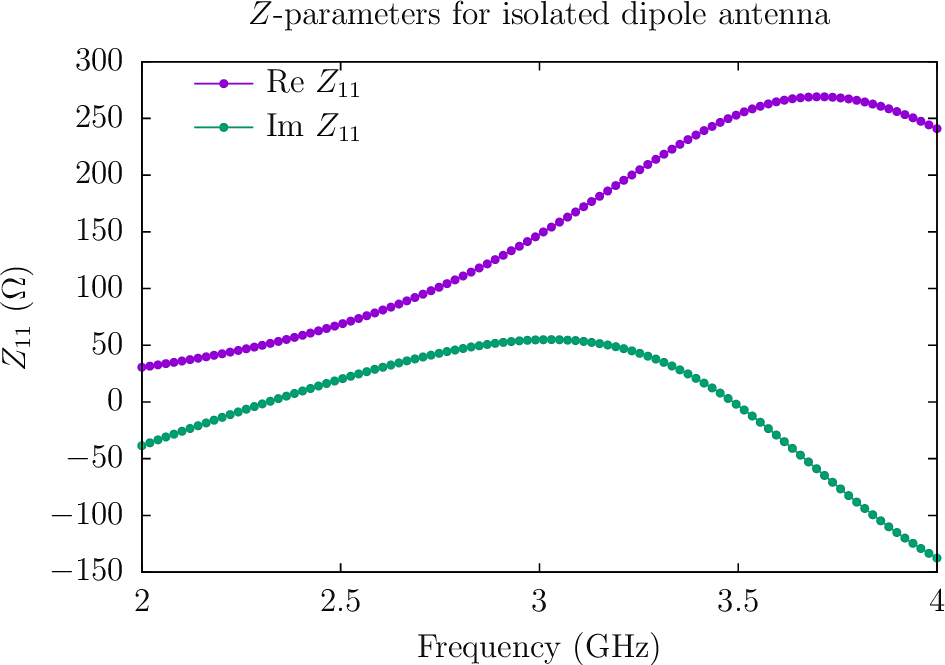
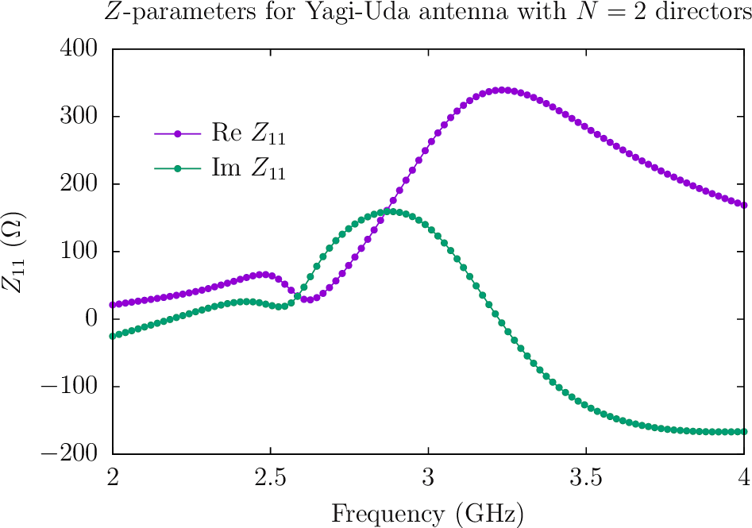
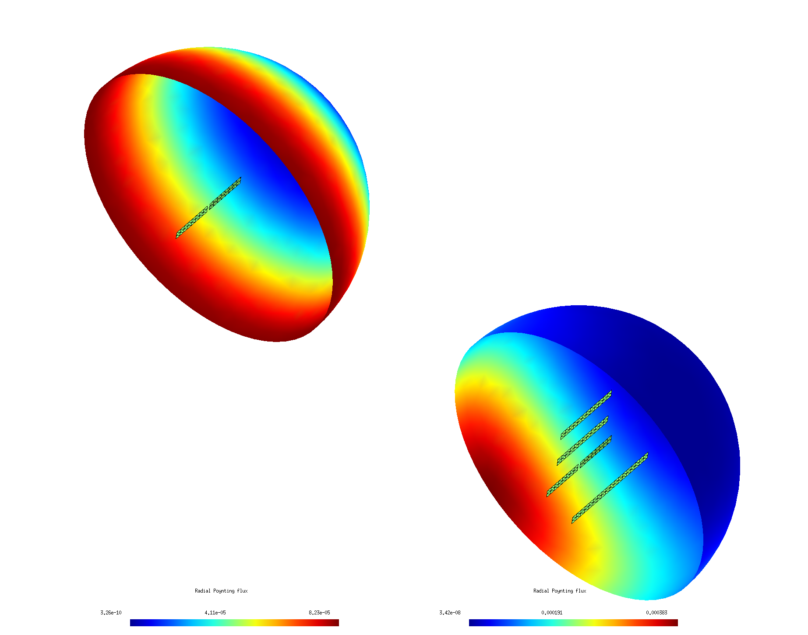

S-parameters, directivity, and radiated field patterns of Yagi-Uda antennas
In this example we'll use the scuff-rf application module within the scuff-em suite to investigate a Yagi-Uda antenna design. We will consider both free-standing antennas and antennas printed on PCBs, with the effect of the PCB handled implicitly using scuff-em's support for implicit treatment of multilayer dielectric substrates. We will look at both (a) input impedance vs. frequency, (b) radiation patterns and directivity for antennas driven at a given frequency with given port currents.
The files for this example may be found in
the share/scuff-em/examples/YagiUdaAntennas directory
of your scuff-em installation.
gmsh geometry and mesh files
The gmsh geometry file PlanarYUAntenna.geo describes three separate structures: a dipole antenna with a small feed inlet that will be the driven element in our Yagi-Uda antenna, a reflector, and a director.
% gmsh -clscale 1 -2 PlanarYUAntenna.geo -o PlanarYUAntenna_Medium.msh
% gmsh -clscale 0.5 -2 PlanarYUAntenna.geo -o PlanarYUAntenna_Fine.msh
The various scuff-em geometry files below then describe Yagi-Uda antennas consisting of the driven dipole element, optionally with a reflector, and optionally with one or more directors.
-
scuff-em geometry file for Yagi-Uda antenna with reflector and 2 directors:
YUAntenna_N2_Medium.scuffgeo -
scuff-em geometry file for Yagi-Uda antenna with reflector and 4 directors:
YUAntenna_N4_Medium.scuffgeo -
scuff-em geometry file for just the dipole element of the YU antenna alone:
DipoleAntenna_Medium.scuffgeo
Visualize scuff-em geometries:
Antenna with directors:
% export SCUFF_MESH_PATH=./mshFiles
% scuff-analyze --geometry scuffgeoFiles/YUAntenna_N2_Medium.scuffgeo --WriteGMSHFiles
% gmsh YUAntenna_N2_Medium.pp

Antenna with directors:
% export SCUFF_MESH_PATH=./mshFiles
% scuff-analyze --geometry scuffgeoFiles/YUAntenna_N4_Medium.scuffgeo --WriteGMSHFiles
% gmsh YUAntenna_N4_Medium.pp

Just the dipole element in isolation:
% export SCUFF_MESH_PATH=./mshFiles
% scuff-analyze --geometry scuffgeoFiles/DipoleAntenna_Medium.scuffgeo --WriteGMSHFiles
% gmsh DipoleAntenna_Medium.pp

Port file
The file Dipole.ports specifies
the RF ports of the structure; in this case there is
just one port, whose positive and negative terminals
are the upper and lower edges of the feed gap in the
driven dipole element.
To verify that scuff-rf interprets the .ports file
correctly to describe the actual ports we intended, we
do a quick run of scuff-rf with the --PlotPorts option:
% export SCUFF_MESH_PATH=./mshFiles
% scuff-rf --geometry scuffgeoFiles/YUAntenna_N2_Medium.scuffgeo --PortFile portFiles/Dipole.ports --PlotPorts
% gmsh YUAntenna_N2_Medium.pp YUAntenna_N2_Medium.ports.pp

The red- and blue-highlighted regions of the structure are the positive and negative terminals of the port.
First run to compute - and -parameters
The simple shell script RunScript.SZParms
computes - and -parameters for the various structures
over a range of frequencies. I plot the results in
gnuplot using
this script: Plotter.zparms.
% RunScript.SZParms
% gnuplot
gnuplot> load 'Plotter.zparms'


Second run to compute radiation patterns
Based on the -parameter data, it looks like the Yagi
antenna wants to radiate at a frequency around 3.2 GHz. So let's
drive the antenna with a unit-strength current at that frequency
and visualize the resulting radiation patterns by plotting
outgoing Poynting flux on a hemispherical surface.
The simple shell script RunScript.FieldPatterns
does this for the various antennas:
#!/bin/bash
CODE=scuff-rf
BASE=.
export GEODIR=${BASE}/scuffgeoFiles
export SCUFF_MESH_PATH=${BASE}/mshFiles
ARGS=""
ARGS="${ARGS} --portfile ${BASE}/portFiles/Dipole.ports"
ARGS="${ARGS} --portcurrentFile ${BASE}/portcurrentFiles/Dipole.PortCurrents"
ARGS="${ARGS} --FVMesh Hemisphere.msh"
for GEOM in DipoleAntenna YUAntenna_N2 YUAntenna_N4
do
${CODE} ${ARGS} --geometry ${GEODIR}/${GEOM}_Medium.scuffgeo
done
Notes:
- The file
Dipole.PortCurrentsis a list of frequencies at which to run calculations and the currents to force into each port at those frequencies. For a geometry with ports, each line of this file has columns: the frequency in GHz followed by the real and imaginary parts of the current to force into each port. For the case at hand, we want to run at just the single frequency =3.2 GHz with a unit-strength current forced into port 1, so the.PortCurrentsfile looks simply like
3.2 1.0 0.0
- The field-visualization mesh
Hemisphere.mshis a gmsh surface mesh produced from the gmsh geometry fileHemisphere.geo. You can get higher-resolution images by meshing this file with higher resolution.
Running the above script produces files with names
like YUAntenna_N2_Medium.Hemisphere.pp
showing outgoing Poynting flux plotted over the hemisphere mesh.
Here's a composite image showing results for the isolated dipole
and the Yagi-Uda antennas, with
the antenna meshes superposed (and enlarged by a factor of 5× to
make it easier to see them). The simple dipole antenna radiates
isotropically, while the Yagi antenna exhibits high directivity.
